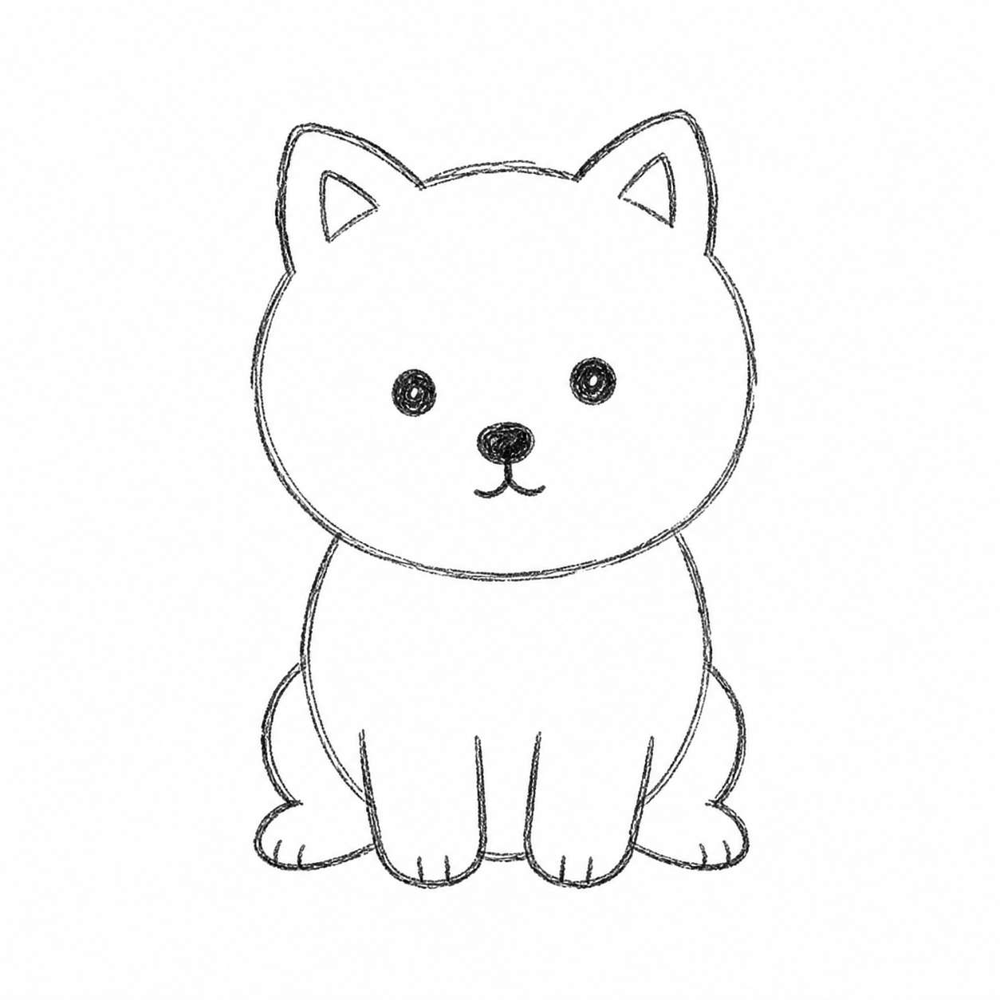
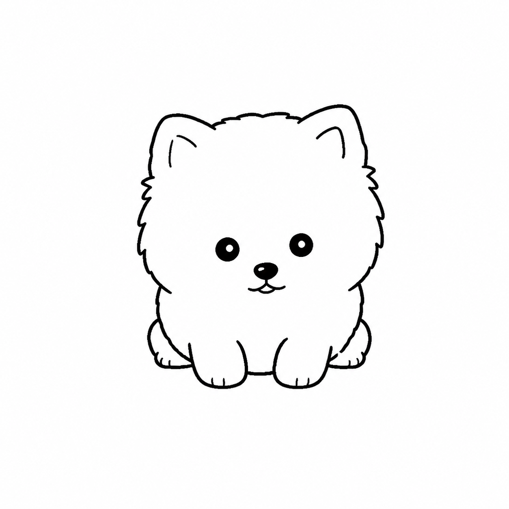
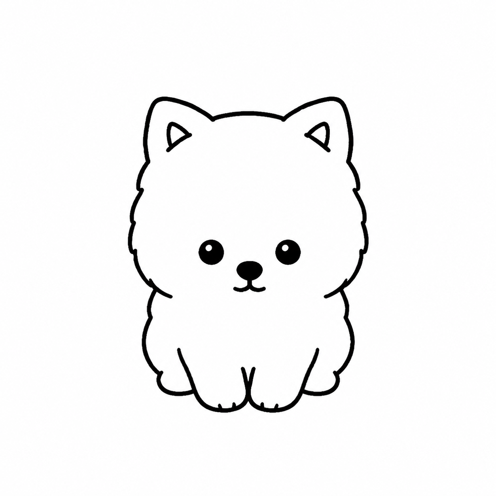

Prompt
좋은 지시가 필요했다.
무엇을 말할까?Interactive Timeline · run_20260819_234247
Selected Iteration
Experiment Summary


Make the ears smaller, rounder, and lower, embedded into the upper sides of the head instead of tall sharp points.

Make the ears smaller rounded triangles with clearer inner triangular marks.

Make the ears smaller and more embedded again.